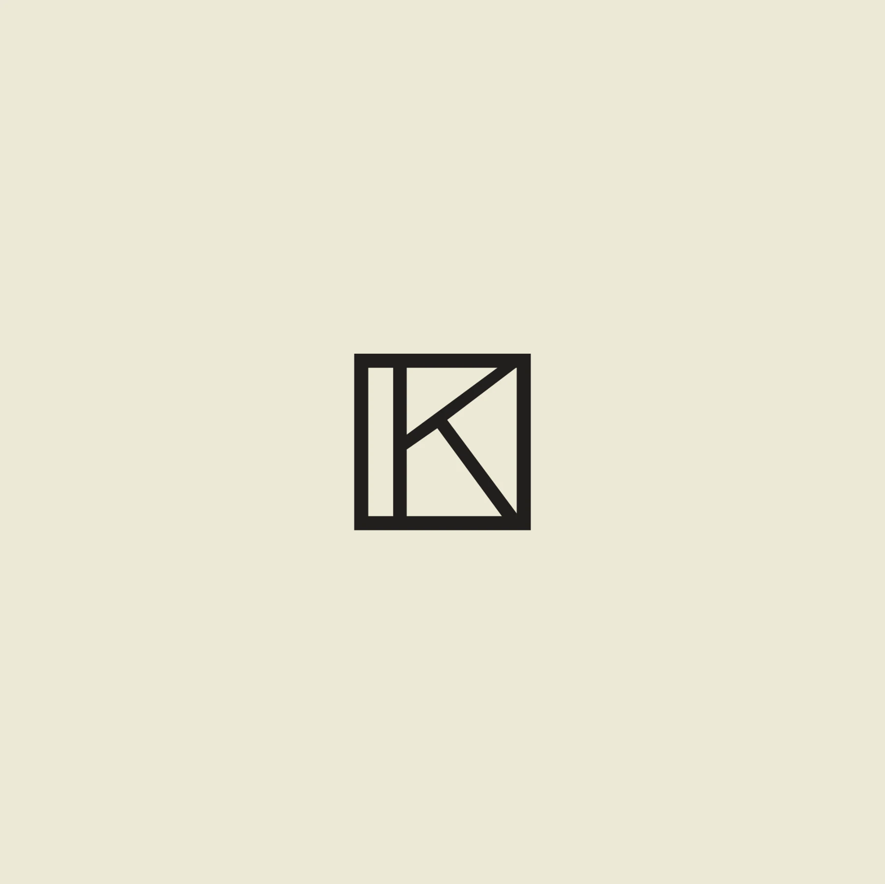

Przejdź do prac
Wszystkie kierunki
← Trzy koncepcje
02
Ciemne muzeum
06
Nocna ekspozycja
08
Filmowy
×
Porównaj koncepcje

KRYSTYNA
MISHCHENKO
☼
Jasny
Język
English
Deutsch
Українська
Polski
Русский
Menu
+
Prace
O artystce
Wystawy i CV
Kontakt
Włącz JavaScript, aby zobaczyć interaktywną galerię.
Pobierz CV
Zamknij ×
←
→